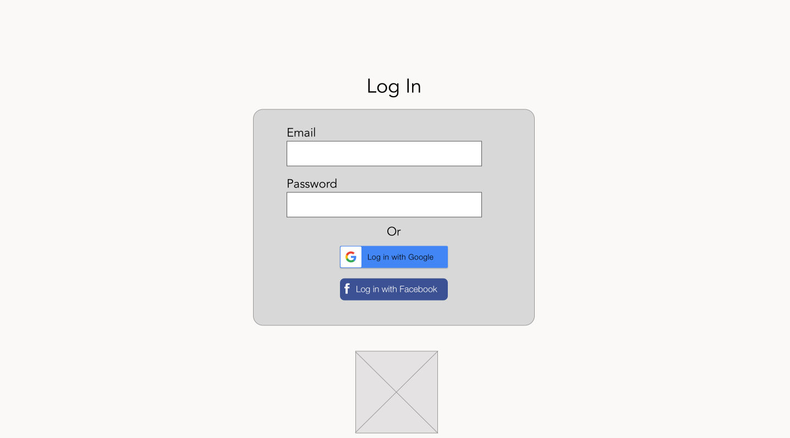
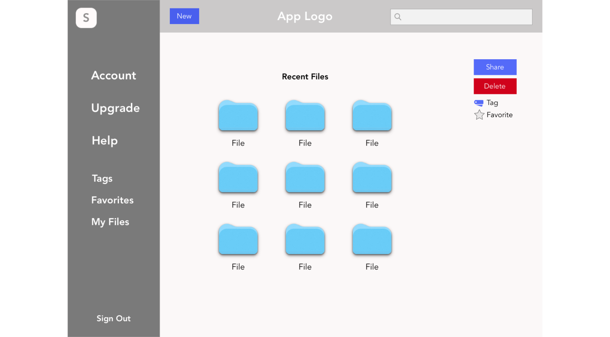
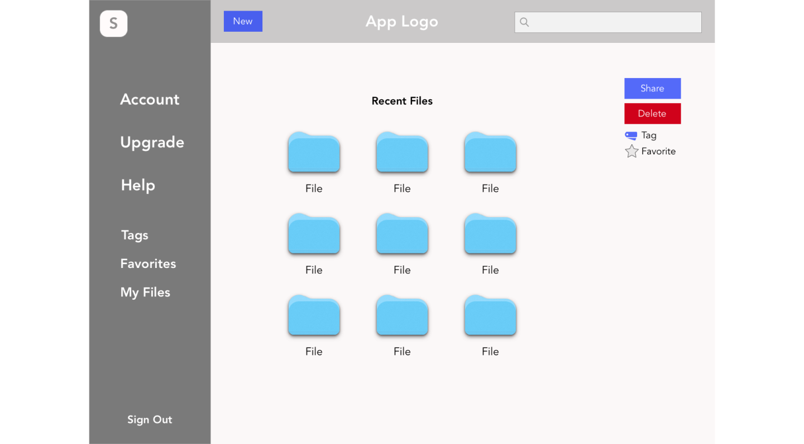
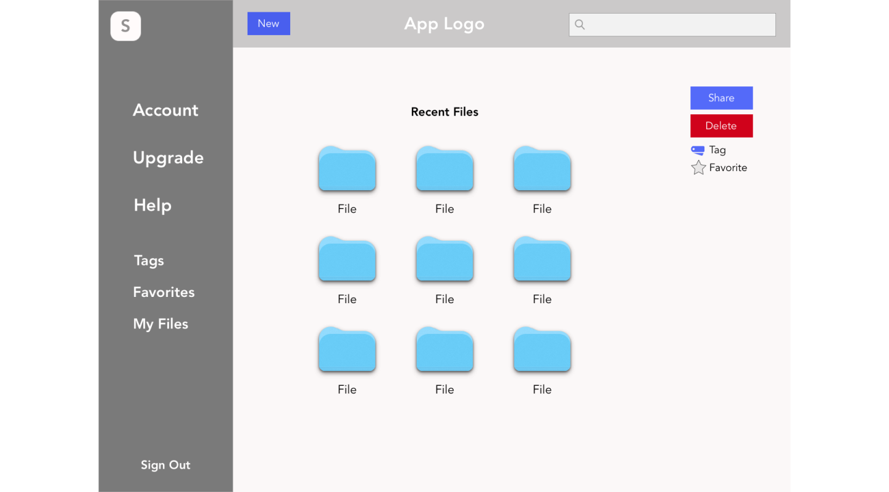

Users desire a way to store, share, and collaborate documents, contents, or images all in one convenient place
Solution
Huddle offers easy-to-use access to users anywhere, anytime. A one-stop-shop to collaborate, share, and store all of your content with just a click of a button!
So, what is Huddle?
We are an SaaS web/mobile app that allows users a place to collaborate, share, and store infomration all in one convenient location
Competitive Analysis
SWOT analysis helped me to take a deeper dive into some of Huddle's main competitors: Google Drive, Dropbox, and Evernote
This is what I found:
PROS

CONS

User Survey
Among the most widely recognized issues across the board seemed to be around the amount of storage that was available to users as well as the need to be able to easily and quickly access their files, especially on the go.
Of the users that surveyed my online form, all of the users were certainly familiar with what cloud storage was and were aware of the larger applications that were mentioned and more. The vast majority also seemed to not only show interest, but also were receptive to improvements in existing products as you can see below
User Stories and FLows
With data from my survey and analysis, I was able to create and rank user stories to highlight the main features of the product.
After prioritizing 'MVP' stories, I turned each user story into user flows to show how the user would interact with the product.
The flows focused mainly around onboarding and navigating through the dashboard
Wireframes


Branding
In order to develop the concept, I sketched out different possibilities for brands that focused on “collaboration” and “community” which helped generate various hand drawn sketches that were later converted into vector drawings on Sketch.
Once I felt more confident with the brand name of “Huddle,” it took me a few preference tests to create the current logo, inspired by the power of simple and clean letter-based logos.
Preference Test
Before I created my high fidelity mockups, I thought that I would go and see what others thought about some competing design ideas.
So, after several versions, I wanted to try and incorporate some of the feedback I got into my final design. My final design included angles to break up the monotony of the layout, additional colors to incorporate more than my original set color palette, and to properly use blank space.
My guiding star was around the principle of modernity and simplicity. I wanted to invoke a very clean and playful vibe from my design, and I think that I was able to successfully incorporate that into my final design as you will soon see.
High Fidelity Mockup
After wireframing, prefernce testing, and finding my brand, I created high-fidelity mockups of huddle.
Conclusion
One of the biggest takeaways I learned, not just from designing Huddle, but from this program in general, is that there will rarely be a product made from an initial design.
If things don’t seem to fully pan out from my initial conception. At first, I took it harshly when my first run-throughs were not meeting the levele of expectation of not only my mentors, but also myself; however, as I look back, it is clear that it is because of all of the time that I had to go back and rethink certain concepts or designs, that iwas able to arrive at where I ended with.
Let's Connect!
Thanks for stopping by! Do you have any questions? Hit me up! I am more than happy to link up!
2018 Samuel Park | deisgned and developed by Samuel Park


 
